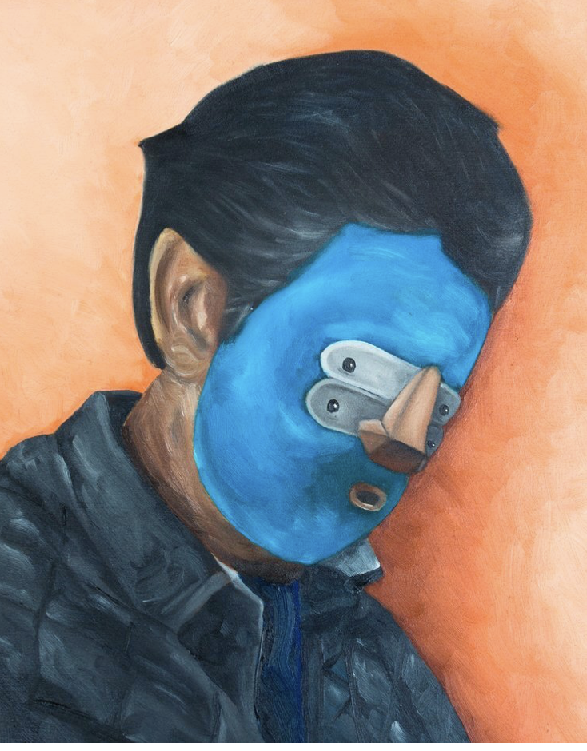
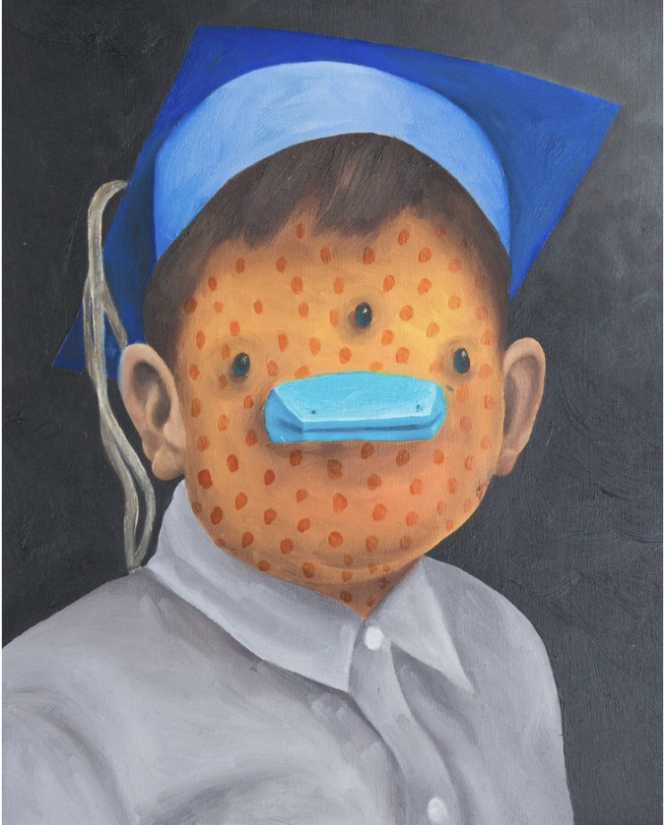
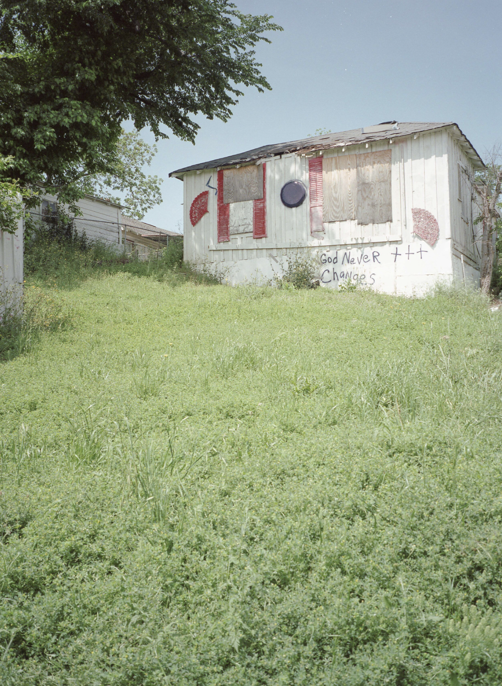
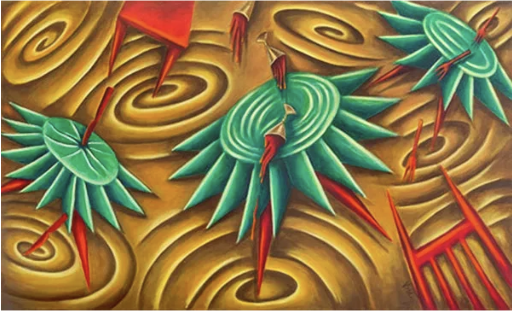
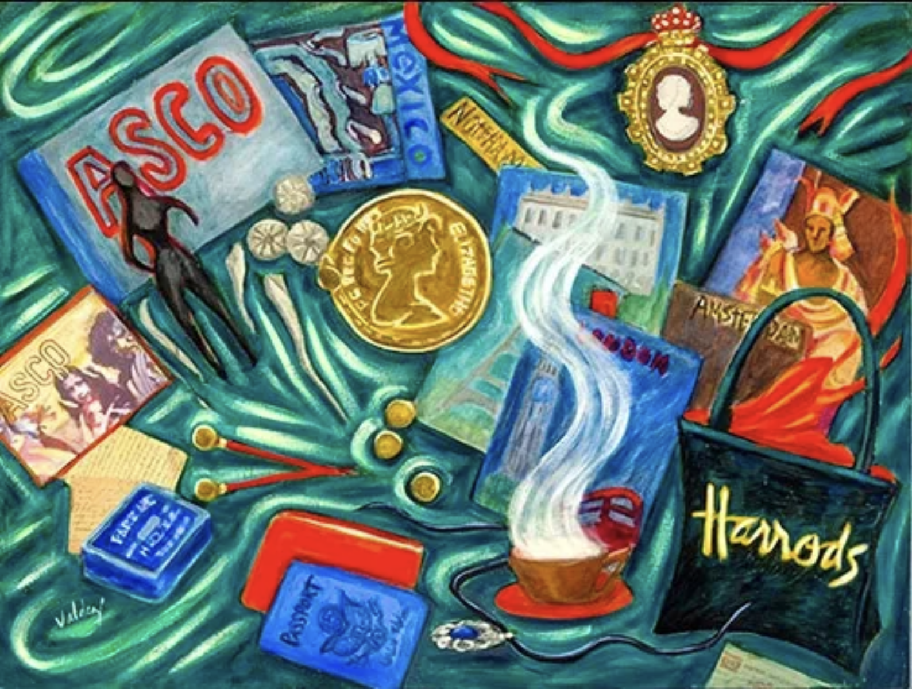
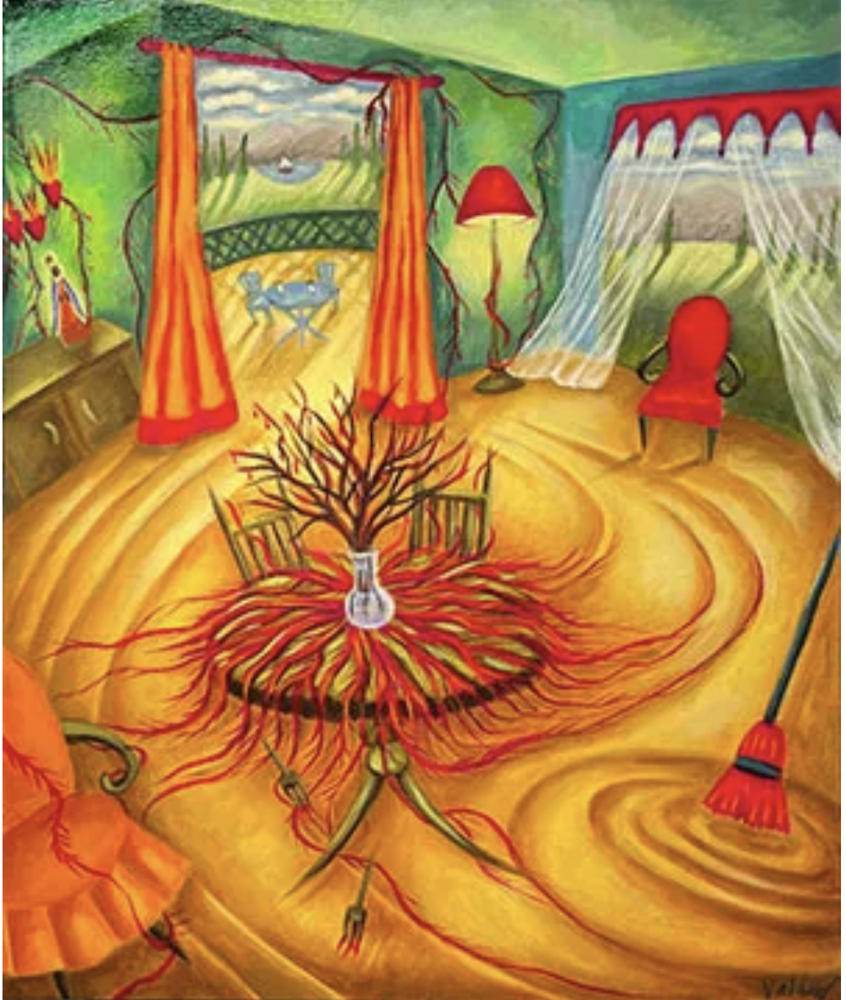

Virtual Art Exhibit
The theme of the overall exhibit is an exploration into dual identity and how Mexican-American and Chicano/a/x artists express identity through various mediums and art styles.
Vincent Valdez
Vincent Valdez was born in 1977 in San Antonio, Texas, and attended the Rhode Island School of Design..
Kill The Pachuco Bastard! 2001

The painting you've described, which depicts the 1943 Zoot Suit Riots in Los Angeles, holds a significant place in Mexican-American cultural history. This event is a stark reminder of the racial tensions that existed in the United States, particularly in cities like Los Angeles, where Mexican-American communities faced discrimination and were often marginalized.
The Zoot Suit Riots were a series of conflicts in June 1943 in Los Angeles, California, United States, which pitted American servicemen stationed in Southern California against Mexican-American youths and other minorities who were residents of the city. It was named after the zoot suits that were worn by many of the Latino youths during that period, which came to be seen as a symbol of rebellion against traditional American values.
The oil painting seems to vividly capture the chaos and violence of the riots. By doing so, it serves as a historical document that reflects on the struggle for identity and recognition faced by Mexican Americans. The violence depicted in the painting underscores the societal tensions of the era, where Mexican Americans and other minorities were scapegoated for broader social issues, such as crime rates.
Moreover, the artwork likely conveys the complexities of Mexican-American identity during the World War II era, where patriotism was juxtaposed with racial discrimination. Despite many Mexican Americans serving valiantly in the armed forces, they were still subjected to prejudice and violence at home. The painting might also comment on the broader theme of how clothing and personal style can become powerful symbols of cultural identity and resistance.
In interpreting this painting, it's essential to understand that it's not just about the events it portrays, but also about the ongoing narrative of Mexican-American culture—its resilience, its struggle for civil rights, and the quest for a dignified place in American history.
In Memory of Great Grandfather 1999

House paint on a wood panel; this piece was featured in Vincent Valdez: In Memory and starred in a Cheech exhibit in 2022. This piece fits into the culmination theme of identity because of the preservation of Mexican-American history. The purpose of the painting is to remember and feel empathy towards the sadness of passing and possibly the plight of the great-grandfather of Vincent Valdez, without knowing the full context of the man is thinking, sadness emanating from the subject.
The Strangest Fruit 2013


This piece contains nine oil paint canvases. The purpose of this piece was to re-enact the lynchings of Latinos in Texas. This is an essential piece of history for Mexican American/Latino/a/x in America because without pieces dedicated to these, the lives lost may have been forgotten forever. This also humanizes Mexican Americans because it brings the horrors of lynchings to the modern world, where everyday people with clothes and apparent ties to the culture are being subjected to harm.
Carlos Donjuan
Carlos Donjuan is a Mexican-American painter who was born in 1982 in San Luis Potosi, Mexico. He is an art teacher, and graffiti artist at the University of Texas at Arlington.
Nasty Nez

Nasty Nez was featured in the Cheech 2022 exhibit, bringing the works of Carlos Donjuan to light. One of the major themes is his subjects wearing masks to demonstrate how Mexican-Americans wear a mask to conceal their identities and blend into American society. The tiger mask could represent Mexican Americans ferocity and will to endure the harshness of society and stay relaxed, which coincides with the graphic t-shirt and light colors.
Untitled

The artwork you're describing presents a figure with a blue mask, a significant element when discussing the theme of identity, particularly within the context of Mexican-American history.
The blue mask could represent a multitude of things. Masks often symbolize the various roles or personas people adopt in different situations, and in the context of Mexican-American history, this could relate to the concept of 'code-switching' or altering one’s behavior to conform to different cultural norms. This is often experienced by individuals who navigate between the cultural expectations of their heritage and those of the broader American society.
The mask's color being "sad and sickly" could suggest the emotional toll that such masking can take on an individual's mental health. It hints at the struggle to maintain a cultural identity that may not fully align with mainstream American values or the dominant culture's perception of Mexican-American identity.
The figure looking down, away from the viewer, might suggest introspection or shame, possibly relating to hiding one's true self. It may also speak to the historical marginalization of Mexican Americans, where looking down could be a forced posture adopted in the face of discrimination.
The painting might reflect the historical and contemporary challenges Mexican Americans face in preserving their cultural identity while striving to be accepted within American society. It could be a statement on the psychological impact of this cultural duality — the pressure to assimilate and the simultaneous desire to hold onto cultural roots.
Your interpretation captures the essence of the challenges associated with identity and the symbolic 'mask' that Mexican-Americans might feel compelled to wear. This mask can serve as a protective barrier and a barrier to genuine self-expression and acceptance.
Untitled

Carlos Donjuan portrays a child wearing a mask and a graduation cap. If the mask represents the idea of covering up Mexican-American heritage, and the graduation cap, which most likely represents academic achievement and the completion of a stage of education, this piece could be seen as a commentary on the tension between cultural identity and assimilation within educational or societal contexts.
The mask could allude to the pressure that Mexican-American individuals may feel to hide or minimize their cultural heritage to succeed or fit in within the dominant culture, particularly in the education sector. The graduation cap could then represent success within education, but the masked face raises questions about the cost of that success and whether it necessitates the suppression of one's cultural identity.
Untitled

The photograph depicts a shed/home with the phrase "God Never Changes" and several crosses painted on one side. The fact that this photo was taken in Texas could suggest several things about Mexican-American culture within that context.
The prominence of religious expression, as seen in the crosses and the phrase, may reflect the vital role that religion, particularly Christianity, plays within many Mexican-American communities. The image could highlight the centrality of faith and religious beliefs as a constant in a culture experiencing change or facing challenges.
The state of the building suggests themes of economic disparity or the resourcefulness of communities that build and make do with the materials at hand. It could be a commentary on the economic conditions of specific Mexican-American populations in Texas.
The use of the American flag in a distressed state could be interpreted as a symbol of Mexican-American identity, being American yet having a separate cultural identity that may sometimes feel in tension with mainstream American culture.
It is important to note that interpretations of such images are subjective and can vary widely. The actual intent behind the image can only be fully understood in the context of the creator's perspective and the broader narrative they are part of. This image alone does not represent the entirety of Mexican-American culture in Texas, which is diverse and multifaceted.
Patssi Valdez
Patssi Valdex is an American Chicana artist born in 1951 in Los Angeles, Califiornia who went to the Otis School of Design in California.
Turbulent 2015

The image is a painting that features stylized elements that can be interpreted in various ways, depending on the viewer's perspective and knowledge of Mexican-American culture.
The use of vibrant colors and dynamic, almost surreal forms is reminiscent of specific styles within Mexican art, such as those found in Mexican folk art or the work of famous muralists. These artistic traditions often utilize bright colors and bold patterns to tell stories and convey cultural narratives.
The shapes in the painting resemble agave or maguey plants, which are native to Mexico and hold economic and cultural significance, often used in tequila and mezcal production. The spirals could symbolize the cyclical nature of life, a common theme in many indigenous cultures of the Americas, or they could represent the whirlwind of cultural fusion that characterizes the Mexican-American experience.
The red, white, and green colors could be a nod to the Mexican flag, symbolizing national pride or heritage. The presence of these colors and the plant-like forms might speak to the importance of agricultural practices brought from Mexico to America and the deep-rooted connections to the land and nature that persist in Mexican-American culture.
However, any interpretation is speculative without more context or information about the artist’s intentions. The painting could discuss themes of identity, heritage, growth, and the intertwining of traditions and modernity within the Mexican-American community. The cultural significance would likely be enriched by an understanding of the symbolism and intent behind the individual elements chosen by the artist.
Souvenirs 2014

The image seems to have many symbols and could be discussing the complexities of Mexican-American identity, the fusion of Mexican heritage with American culture, and the experiences of the Chicano community. Each object might represent a facet of Mexican-American life, from the political and historical to the personal and cultural. Firstly the “ASCO” text, Asco was an avant-garde art collective based in Los Angeles in the 1970s that was made up of Chicano artists. They also were heavily connected to political activism within the Mexican-American community and culture. The passport stamps and other images relating to travel could signify the physical move many had to make from Mexico to America and how the journey was not easy as the struggle to navigate identity and prejudice is difficult. Next, there is a portrait of a religious figure which could be a nod to Catholicism which is a huge part of Mexican history. There is also a lot of artwork and books that may highlight the contribution of Mexican-American artists to American culture.
Isolation (COVID Series 2020)

The artwork titled "Isolation (COVID)" depicts an indoor scene with a central figure that appears to represent the coronavirus, positioned on a table that seems to be a focal point of the room. The room has vibrant colors, a window showing an outdoor scene, and various household items, including a broom.
In the context of Mexican-American culture, the piece could reflect on the universal experience of isolation during the COVID-19 pandemic, which had a significant impact on communities globally, including Mexican-Americans. The vibrant colors and domestic setting represent the warmth and vivacity of Mexican-American homes, which became spaces of confinement during lockdowns.
The presence of religious imagery, such as the small figure on the left that might be a saint or the Virgin Mary, could indicate the importance of faith and spiritual comfort in challenging times. The view through the window suggests a world outside that is currently out of reach, reinforcing the theme of isolation.
The empty chair and the broom could symbolize the absence of people and the stagnation of daily life and activities. The setting sun in the window may represent the passage of time or hope for the end of the pandemic.
This piece likely speaks to the shared experience of isolation felt during the pandemic, infused with cultural symbols that are meaningful to the Mexican-American community. It also touches on themes of resilience, the comfort of home and faith, and the longing to return to normalcy.